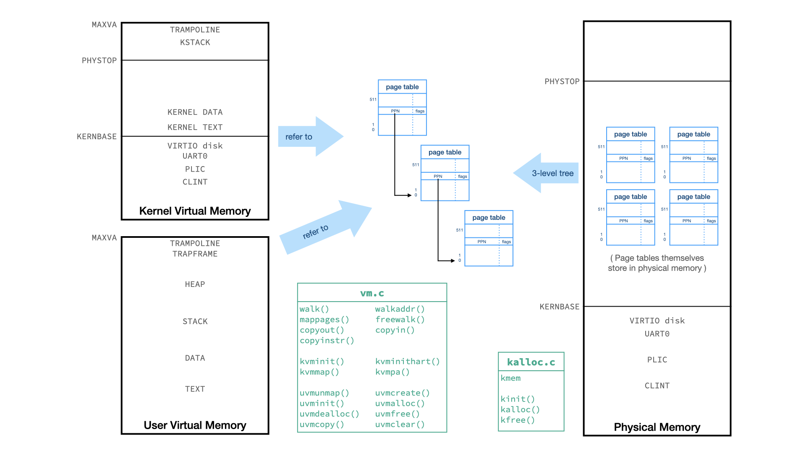
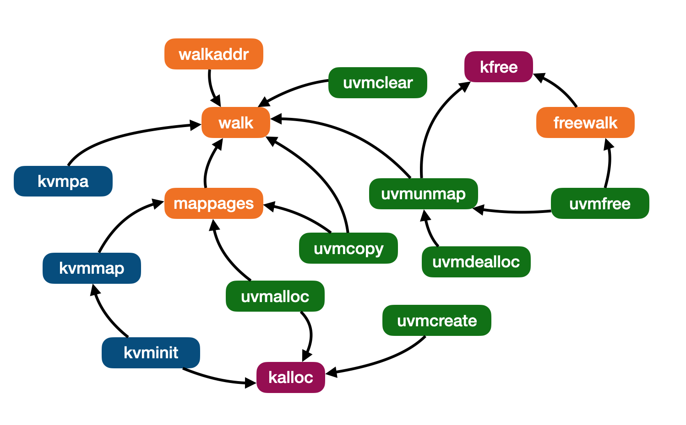
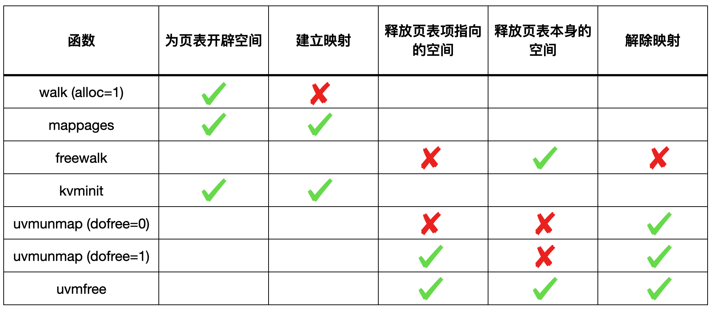
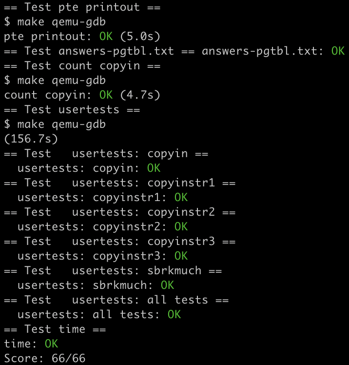

[xv6-mit-6.S081-2020]Lab3: pgtbl
Lab: page tables
https://pdos.csail.mit.edu/6.S081/2020/labs/pgtbl.html
代码：https://github.com/xyfJASON/xv6-mit-6.S081-2020/tree/pgtbl
做这次实验需要对 xv6 的页表机制和代码有深刻的理解，必须先阅读 xv6 book 的第三章。
为了更形象的理解，我画了一张图：

首先要明白的一点是，页表本身也是在内存中的，也是需要内存空间的，所以给页表开辟空间和建立映射（填写页表项）是两码事，同样的，释放页表项指向的空间、释放页表本身占有的空间、解除映射（页表项清零）也是不同的事儿。
其次，xv6 代码中只有 kalloc.c 是对物理内存进行直接管理的代码，要真正分配、释放内存空间，最底层一定是调用 kalloc() 或 kfree() 实现的。
最后，vm.c 正如其名，是管理虚拟内存的代码，包括（加粗重点）：
walk：在指定的页表中找到 pte 地址，若设置了 alloc 参数，可以为页表开辟内存空间（但是 walk 不会给叶子结点的页表项填写内容，即不会建立映射）；
mappages：建立映射，如果页表本身不存在会先开辟空间，要求原本没有映射；
freewalk：释放页表本身，要求所有映射已经被解除（页表项全部已经清零）；
walkaddr：在指定的用户页表中找虚拟地址对应的物理地址，如果页表不存在/映射不存在返回 0；
kvminit：创建初始内核页表（开辟空间并建立映射）；
kvminithart：为 CPU 设置 satp 寄存器，刷新 TLB；
kvmmap：对 mappages 的封装，专门为内核页表建立映射；
kvmpa：在内核页表中找虚拟地址对应的物理地址，只在为 kstack 找物理地址的时候才需要用；
uvmunmap：解除映射（要求映射存在），若设置了 dofree 参数，会同时释放页表项指向的空间（注意不会释放页表本身）；
uvmcreate：创建一个新的用户页表，即为页表开辟空间；
uvminit：为第一个进程加载页表；
uvmalloc：如果 newsz >= oldsz，则在 [oldsz, newsz) 区间内开辟内存、创建页表并建立映射。
uvmdealloc：如果 oldsz > newsz，则将 [newsz, oldsz) 区间内的页表解除映射并释放页表项指向的空间；
uvmfree：解除映射、释放页表项指向的空间、释放页表本身；
uvmcopy：把父进程的页表和页表项指向的物理空间复制给子进程；
uvmclear：把给一个 PTE 标志为 invalid，系统调用 exec 用它来设置 guard pages。
copyout：从内核 copy 给用户地址
copyin：从用户地址 copy 进内核
copyinstr：从用户地址 copy 一个字符串进内核
它们的调用关系是：

再画一个表吧：

Print a page table
任务：定义一个函数 vmprint()，它接受一个 pagetable_t 参数，按格式打印出该页表。在 exec.c 返回之前，如果当前进程是 1 号进程，则调用 vmprint() 打印其页表。
根据提示，我们参照 freewalk 的代码结构，可以知道如何递归遍历所有页表。值得说明的是，freewalk 中判断到达叶节点的方式是检查 PTE_R, PTE_W 或 PTE_X 是否至少有一个被置位了，如果都没有那说明不是叶节点。这样判断的依据是，中间节点标志位的设置是在 walk (kernel/vm.c) 函数中进行的，参看源码就知道，walk 函数只给 PTE_V 置位了，其余标志都是 0；而叶节点是我们设定的，一定会包含 PTE_R, PTE_W, PTE_X 中的至少一个。
但是，我实现 vmprint 时调用另实现的 printwalk 函数，后者可以接受当前层级作为参数，所以判断是否到达叶节点就没有必要这么麻烦了。
A kernel page table per process
任务：xv6 系统只有一个内核页表，只要它在内核中运行就用这个内核页表；同时每一个进程都有自己独立的用户页表。因此，当内核接受一个用户空间的指针（例如调用 write() 时传入的指针）时，必须先将其翻译成物理地址才能使用。此次任务是修改内核使得每一个进程都有一个上述全局内核页表的副本。
首先在 struct proc 中添加一项：pagetable_t k_pagetable，表示该进程的内核页表。接下来，按捺住冲动的内心，好好想一下我们应该做些什么：我们需要实现这个页表的「生命周期」——它随着进程的创建而创建、随着进程被释放而释放。
为此，我们回顾一下全局内核页表的「生命周期」（这一段在 xv6 book 的 3.3 节有详细阐述）：kernel/main.c 中，main 函数首先调用 kvminit() 创建初始全局内核页表（开辟空间+填充初始页表项，除内核栈以外），然后调用 kvminithart() 装载全局内核页表，最后调用 procinit() 为所有 NPROC 个进程开辟内核栈并重新装载。由于全局内核页表是始终存在的，所以没有释放的操作。
对应的，我们需要在 allocproc 中创建初始进程内核页表、映射到已经开辟出来的内核栈，在 scheduler 中进程切换时装载对应的进程内核页表，最后在 freeproc 中释放进程内核页表。这些操作的代码都在 kernel/proc.c 中实现。
1 | |
1 | |
1 | |
其中，我们需要实现一些底层函数，我分别命名为 pvminit, pvminithart, pvmmap 和 freewalk_unmap，前三者是遵循 xv6 的命名方式（kvm 开头表示对全局内核页表的操作，uvm 开头表示对用户页表的操作，所以我用 pvm 开头表示对进程内核页表的操作），第四个函数的命名在下面说明。这四个底层函数都是在 kernel/vm.c 中实现的。
pvminit：模仿 kvminit 为每个进程开辟内核页表空间并初始化，返回指向该页表的指针
1
2
3
4
5
6
7
8
9
10
11
12
13
14pagetable_t
pvminit()
{
pagetable_t ret_pagetable = (pagetable_t) kalloc();
memset(ret_pagetable, 0, PGSIZE);
pvmmap(ret_pagetable, UART0, UART0, PGSIZE, PTE_R | PTE_W);
pvmmap(ret_pagetable, VIRTIO0, VIRTIO0, PGSIZE, PTE_R | PTE_W);
pvmmap(ret_pagetable, CLINT, CLINT, 0x10000, PTE_R | PTE_W);
pvmmap(ret_pagetable, PLIC, PLIC, 0x400000, PTE_R | PTE_W);
pvmmap(ret_pagetable, KERNBASE, KERNBASE, (uint64)etext-KERNBASE, PTE_R | PTE_X);
pvmmap(ret_pagetable, (uint64)etext, (uint64)etext, PHYSTOP-(uint64)etext, PTE_R | PTE_W);
pvmmap(ret_pagetable, TRAMPOLINE, (uint64)trampoline, PGSIZE, PTE_R | PTE_X);
return ret_pagetable;
}pvminithart：模仿 kvminithart 设置 satp 寄存器和刷新 TLB
1
2
3
4
5
6void
pvminithart(pagetable_t pagetable)
{
w_satp(MAKE_SATP(pagetable));
sfence_vma();
}pvmmap：模仿 kvmmap 在传入的进程内核页表中添加新的映射
1
2
3
4
5
6void
pvmmap(pagetable_t pagetable, uint64 va, uint64 pa, uint64 sz, int perm)
{
if(mappages(pagetable, va, sz, pa, perm) != 0)
panic("pvmmap");
}freewalk_unmap：释放进程内核页表的时候，我们只需要解除映射并释放掉页表本身占据的空间即可，不能够释放掉页表项指向的内存空间。可惜，vm.c 里面并没有支持我们这么干的函数（见上文的表格），所以我仿照 freewalk 写了一个 freewalk_unmap，命名很直观，即在 freewalk 的基础上增加解除映射功能：
1
2
3
4
5
6
7
8
9
10
11
12
13
14
15
16// Free page table and unmap PTE without freeing physical memory pages.
void
freewalk_unmap(pagetable_t pagetable)
{
for(int i = 0; i < 512; i++){
pte_t pte = pagetable[i];
if((pte & PTE_V) && (pte & (PTE_R|PTE_W|PTE_X)) == 0){
uint64 child = PTE2PA(pte);
freewalk_unmap((pagetable_t)child);
pagetable[i] = 0;
} else if(pte & PTE_V){
pagetable[i] = 0;
}
}
kfree((void*)pagetable);
}
Simplify copyin/copyinstr
任务：原本的 copyin 获取指向用户地址的指针，因此需要在用户页表中查找对应的物理地址。现在，我们把每个进程的用户页表加进它的内核页表，这样 copyin 就可以直接将用户指针解引用。这么做的前提是用户虚拟地址不能覆盖掉内核虚拟地址中存放数据和代码的部分，幸运的是，xv6 的用户虚拟地址从 0 开始，而内核从更高的地址开始，所以用户页表可以合并进内核页表。但是，用户虚拟地址不能超过内核最低的虚拟地址，即 PLIC，我们写代码时需要保证这一点。
首先，修改 copyin 使之直接 return copyin_new，后者 xv6 已经实现好了；copyinstr 同理。
接下来实现用户页表复制到内核页表的底层操作，我将其取名为 pvmcopy。与 uvmcopy 不同，uvmcopy 复制了物理内存，毕竟父子进程的变量不共享；但是 pvmcopy 只需要复制 PTE。注意，由于内核页表项不能被用户进程访问，所以复制的时候去掉 PTE_U 标志位。
1 | |
上面的代码将 u_pagetable 中涉及 [st, ed) 范围的页表项复制给 k_pagetable。另外，有些操作会清除用户页表的一些页表项，所以为了方便我加了一个 clear_ed，当然这个功能可以拆成另一个函数写。
现在，我们需要找到所有对用户页表进行修改的操作，用 pvmcopy 同步修改内核页表，这样的操作在 fork(), exec() 和 sbrk() 中：
fork
fork 里面有一处涉及到修改 pagetable 的地方，是将父进程的用户页表（及物理空间）复制给子进程，这之后我们需要把子进程的新的用户页表复制到它的内核页表中：
1
2
3
4
5if(pvmcopy(np->pagetable, np->k_pagetable, 0, np->sz, np->sz) < 0){
freeproc(np);
release(&np->lock);
return -1;
}exec
exec 会用新的进程彻底覆盖掉原来的进程，所以我们也应该用新的用户页表彻底替换掉原来的用户页表——彻底替换不仅要求复制新的，还要求清除旧的：
1
2if(pvmcopy(pagetable, p->k_pagetable, 0, sz, oldsz) < 0)
goto bad;sbrk
sbrk 其实就是 growproc，会把进程的用户空间从 sz 大小变成 sz+n 大小。如果 n>0，用户空间增加，我们需要把增加的这一部分复制到内核页表中；如果 n<0，用户空间减少，我们需要把减少的部分从内核页表中清除：
1
2
3
4
5
6
7
8
9
10
11if(n > 0){
if((sz = uvmalloc(p->pagetable, sz, sz + n)) == 0) {
return -1;
}
if(pvmcopy(p->pagetable, p->k_pagetable, p->sz, sz, sz) < 0)
return -1;
} else if(n < 0){
sz = uvmdealloc(p->pagetable, sz, sz + n);
if(pvmcopy(p->pagetable, p->k_pagetable, sz, sz, p->sz) < 0)
return -1;
}
最后，别忘了在 userinit 中复制一份初始用户页表！（我就忘了，调了半天总是不对，吐血……）
1 | |
然后这次实验就愉快地结束了。
make grade 结果截图：
